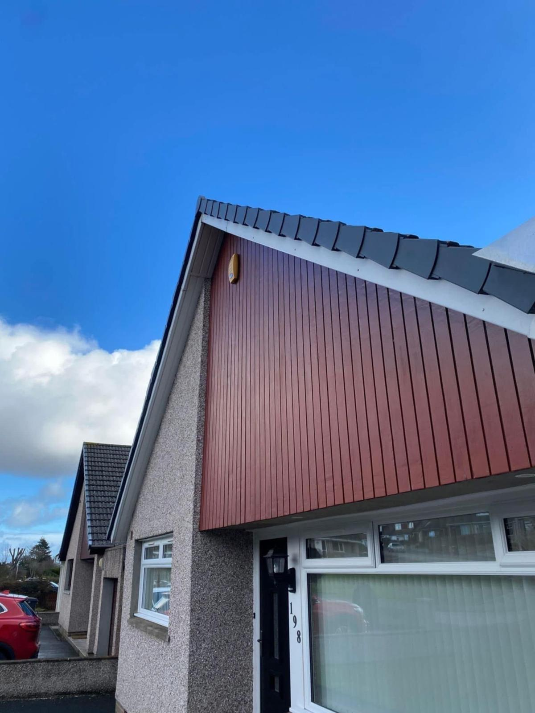

Replace rotten timber fascias, soffits and bargeboards with low-maintenance uPVC that stays smart for decades. Free quotes across Tayside and Angus.
Your roofline is the collective term for the fascias, soffits and bargeboards that run around the edge of your roof. They do an important job — protecting the roof timbers from rain and driving wind — yet they're often the last thing homeowners think about until something goes obviously wrong. Storm Guard Roofing & Building replaces tired, rotten timber roofline with quality uPVC across Dundee, Perth and Angus.
The fascia is the flat board that runs along the lower edge of the roof, directly behind the guttering. It carries the gutter brackets and gives the roof a neat, finished edge. The soffit sits underneath, closing off the gap between the fascia and the wall — it keeps pests out and, where vented, lets air circulate into the roof space. The bargeboard does the same job on the sloping gable ends of the roof, running diagonally from ridge to eaves.
Timber roofline needs painting every few years and is always fighting a losing battle against the Scottish climate. uPVC roofline won't rot, won't swell in the wet or crack in the frost, and never needs painting. It comes in a choice of colours — including realistic woodgrain finishes — so you can match your windows or keep a traditional look without any of the upkeep. Once it's fitted, you can forget about it.
It is possible to fit uPVC over existing timber boards — a process called capping. We can do this, but we typically advise against it. Capping hides rotten timber rather than dealing with it. Hidden rot continues to spread, the extra weight can stress the existing fixings, and ventilation is often compromised. Replacing the boards properly costs a little more upfront but gives a longer-lasting, better-ventilated result that won't cause problems further down the line.
A well-ventilated loft is a healthy loft. Vented soffits allow a steady flow of fresh air into the roof space, which helps keep condensation and damp at bay. When we install new soffit boards we always use the correct vented panels for your roof type, so you're not just getting a smart finish — you're getting a roof that breathes properly too. This is particularly important on older properties across Dundee and Angus where loft insulation has been upgraded in recent years.
A recent Storm Guard roofline replacement:

Because the gutters are fixed directly to the fascia, roofline replacement is the perfect time to upgrade your guttering too. Combining both jobs means scaffolding goes up just once, and you end up with a completely fresh, watertight roofline system in a single visit. We can also carry out any minor roof repairs at the same time, or advise if a full new roof is on the horizon.
Call or WhatsApp us a photo of the problem so we can assess it quickly.
We check the roof properly and find the true cause — not just the symptom.
You get a clear, written price. No surprises, no pressure.
We carry out the repair, tidy up, and back it in writing.
The fascia is the board along the edge of the roof that the gutter is fixed to. The soffit is the board tucked underneath, closing off the gap between the wall and the roof edge. Both protect your roof timbers from the weather.
We can, but we usually recommend full replacement. Capping over hides rotten timber rather than fixing it — replacing the boards properly gives a longer-lasting, better-ventilated result.
Yes. Vented soffits let air flow into the roof space, which helps prevent condensation and damp in the loft.
Yes, and it's the sensible way to do it. Replacing fascias, soffits and guttering together gives a clean, watertight finish in one visit.
A tidy, weatherproof finish that never needs painting. Free quotes across Dundee, Perth and Angus — talk to your local roofers today.